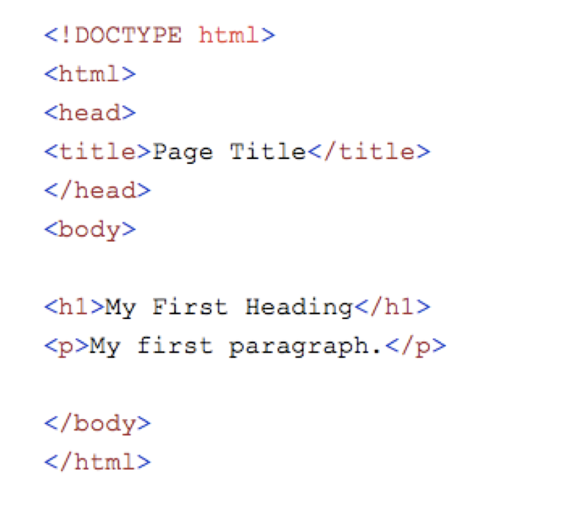
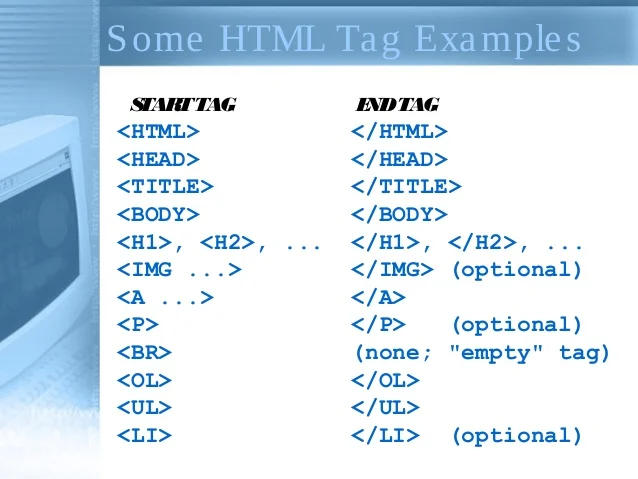
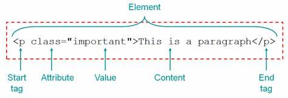

About the HTML
Note: The letters which are under line that are the tags which are written in between <> brackets.
WHat is HTML?
HTML stands for Hyper Text Markup Language
HTML is the standard markup language for creating Web pages
HTML describes the structure of a Web page
HTML consists of a series of elements
HTML elements tell the browser how to display the content
HTML elements label pieces of content such as "this is a heading", "this is a paragraph", "this is a link", etc
The basic structure

The !DOCTYPE html declaration defines that this document is an HTML5 document
The HTML element is the root element of an HTML page
The HEAD element contains meta information about the HTML page
The TITLE element specifies a title for the HTML page (which is shown in the browser's title bar or in the page's tab)
TheBODY element defines the document's body, and is a container for all the visible contents, such as headings, paragraphs, images, hyperlinks, tables, lists, etc.
The H1 element defines a large heading
The P element defines a paragraph
HTML tags
HTML tags are like keywords which defines that how web browser will format and display the content. With the help of tags, a web browser can distinguish between an HTML content and a simple content. HTML tags contain three main parts: opening tag, content and closing tag. But some HTML tags are unclosed tags.
When a web browser reads an HTML document, browser reads it from top to bottom and left to right. HTML tags are used to create HTML documents and render their properties. Each HTML tags have different properties.
An HTML file must have some essential tags so that web browser can differentiate between a simple text and HTML text. You can use as many tags you want as per your code requirement.
All HTML tags must enclosed within < > these brackets.
Every tag in HTML perform different tasks.
If you have used an open tag <>, then you must use a close tag (except some tags)
SYNTAX

There are many tags available in Html to enhance the working the page.
Attributes
HTML attributes are special words which provide additional information about the elements or attributes are the modifier of the HTML element.
Each element or tag can have attributes, which defines the behaviour of that element.
Attributes should always be applied with start tag.
The Attribute should always be applied with its name and value pair.
The Attributes name and values are case sensitive, and it is recommended by W3C that it should be written in Lowercase only.
You can add multiple attributes in one HTML element, but need to give space between two attributes.

Listing
HTML Lists are used to specify lists of information. All lists may contain one or more list elements.
There are three different types of HTML lists:
Ordered List or Numbered List (ol)
Unordered List or Bulleted List (ul)
Description List or Definition List (dl)
Ordered List or Numbered List
In the ordered HTML lists, all the list items are marked with numbers by default.
It is known as numbered list also.
The ordered list starts with oltag and the list items start with litag.

Unordered List
In HTML Unordered list, all the list items are marked with bullets.
It is also known as bulleted list also.
The Unordered list starts with ul tag and list items start with the li tag.

Description list
HTML Description list is also a list style which is supported by HTML and XHTML. It is also known as definition list where entries are listed like a dictionary or encyclopedia.
The definition list is very appropriate when you want to present glossary, list of terms or other name-value list.
The HTML definition list contains following three tags:
dl tag defines the start of the list.
dt tag defines a term.
dd tag defines the term definition (description).

image tag
HTML img tag is used to display image on the web page.
HTML img tag is an empty tag that contains attributes only, closing tags are not used in HTML image element.
Attributes of HTML img tag
1) src
It is a necessary attribute that describes the source or path of the image. It instructs the browser where to look for the image on the server.
The location of image may be on the same directory or another server.
2) alt
The alt attribute defines an alternate text for the image, if it can't be displayed. The value of the alt attribute describe the image in words. The alt attribute is considered good for SEO prospective.
3) Width
It is an optional attribute which is used to specify the width to display the image. It is not recommended now. You should apply CSS in place of width attribute.
4) heigth
It h3 the height of the image. The HTML height attribute also supports iframe, image and object elements. It is not recommended now. You should apply CSS in place of height attribute.

Table
HTML table tag is used to display data in tabular form (row * column). There can be many columns in a row.
We can create a table to display data in tabular form, using tableelement, with the help of tr ,td>, and th elements.
In Each table, table row is defined by trtag, table header is defined by th, and table data is defined bytd tags.
HTML tables are used to manage the layout of the page e.g. header section, navigation bar, body content, footer section etc.
But it is recommended to use div tag over table to manage the layout of the page
Attributes of Table
align
This enumerated attribute indicates how the table must be aligned inside the containing document. It may have the following values:
left: the table is displayed on the left side of the document;
center: the table is displayed in the center of the document;
right: the table is displayed on the right side of the document.
Set margin-left and margin-right to auto or margin to 0 auto to achieve an effect that is similar to the align attribute.
Bgcolor
The background color of the table. It is a 6-digit hexadecimal RGB code, prefixed by a '#'. One of the predefined color keywords can also be used.
border
This integer attribute defines, in pixels, the size of the frame surrounding the table. If set to 0, the frame attribute is set to void.
Cell padding
This attribute defines the space between the content of a cell and its border, displayed or not. If the cellpadding's length is defined in pixels, this pixel-sized space will be applied to all four sides of the cell's content. If the length is defined using a percentage value, the content will be centered and the total vertical space (top and bottom) will represent this value. The same is true for the total horizontal space (left and right).
cell spacing
This attribute defines the size of the space between two cells in a percentage value or pixels. The attribute is applied both horizontally and vertically, to the space between the top of the table and the cells of the first row, the left of the table and the first column, the right of the table and the last column and the bottom of the table and the last row.
Frame
This attribute defines which side of the frame surrounding the table must be displayed.

hyper link
HTML links are hyperlinks.
You can click on a link and jump to another document.
When you move the mouse over a link, the mouse arrow will turn into a little hand.
The a tag comes in pairs, the opening a tells where the link should start and the closing aindicates where the link ends.
To create a hyperlink, you should use the a tag and href attribute, the value of which is the URL, or location, where the link is pointing to.

Frames
HTML frames are used to divide your browser window into multiple sections where each section can load a separate HTML document.
A collection of frames in the browser window is known as a frameset.
The window is divided into frames in a similar way the tables are organized: into rows and columns.
Frames Attributes
cols
Specifies how many columns are contained in the frameset and the size of each column.
rows
border
This attribute specifies the width of the border of each frame in pixels.
frameborder
This attribute specifies whether a three-dimensional border should be displayed between frames
frameSpacing
This attribute specifies the amount of space between frames in a frameset.
This can take any integer value.
SRC
This attribute is used to give the file name that should be loaded in the frame.
Its value can be any URL
name
This attribute allows you to give a name to a frame.
It is used to indicate which frame a document should be loaded into. This is especially
important when you want to create links in one frame that load pages into an another frame,
in which case the second frame needs a name to identify itself as the target of the link.

Forms
An HTML form is a section of a document which contains
controls such as text fields, password fields, checkboxes, radio buttons, submit button, menus etc.
An HTML form facilitates the user to enter data that is to be sent to the server for processing
such as name, email address, password, phone number, etc.
Forms Attributes
form
It defines an HTML form to enter inputs by the used side.
Input
It defines an input control.
Textarea
It defines a multi-line input control.
label
It defines a label for an input element.
feildset
It groups the related element in a form.
select
It defines a drop-down list.
option
It defines an option in a drop-down list.
Button
It defines a clickable button.